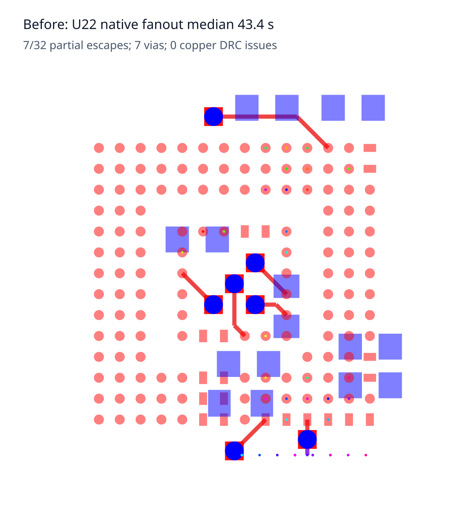
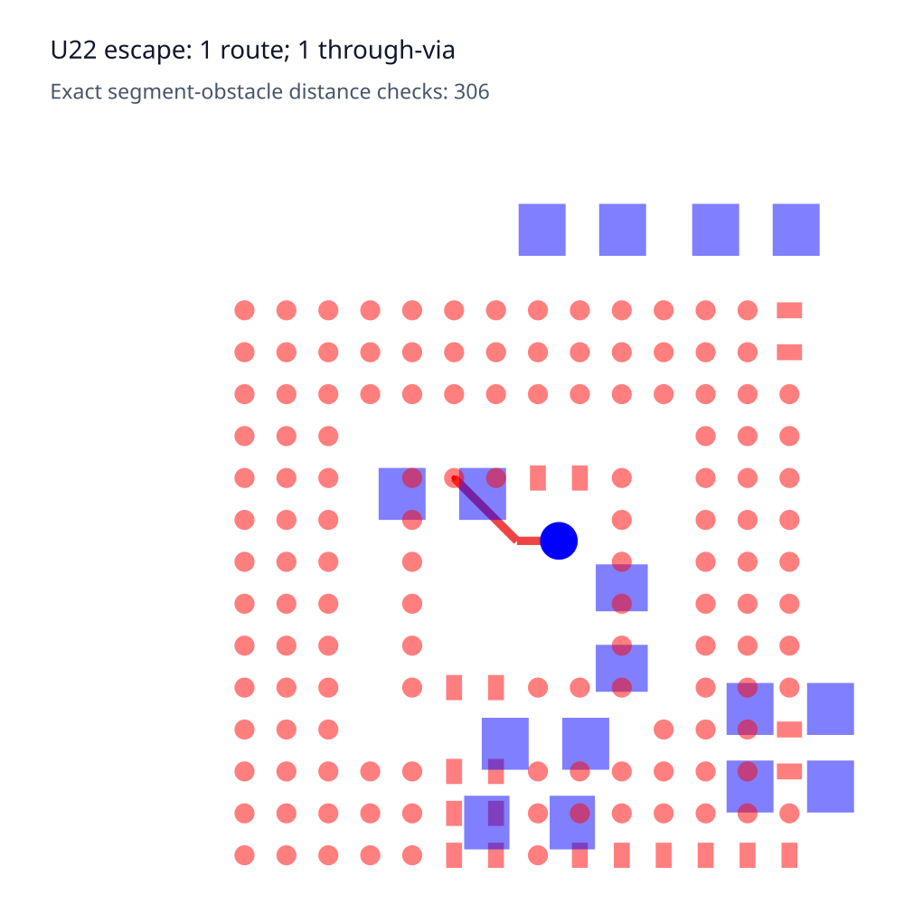
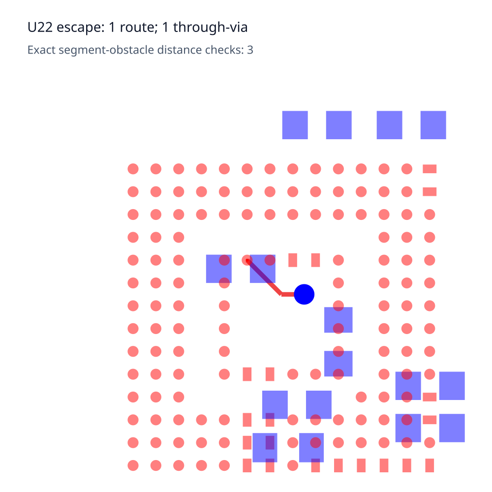

tscircuit 0.0.3244 / core 0.0.2426 / fanout 0.0.90. All six boards still fail fanout; no accepted traces or vias and no DDR bus phase. The fix reduces exact obstacle work.
Analysis and raw statistics · Full before/after PCB SVG · TSX sources and raw results
| Native search | Before median | After median | Reduction |
|---|---|---|---|
| iCE/Pi CM0 SBC | 43.44s | 34.88s | 19.7% |
| i.MX6 Demo Board | 45.70s | 36.84s | 19.4% |
Identical uncommitted copper; only measured timing labels change.
 |
 |  |